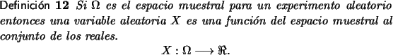
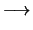
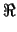
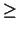
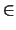
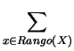
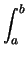
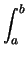
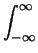
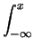

Definiciones Básicas

La propiedad más importante de una variable aleatoria es la distribución de
probabilidad. Si bien no existe una definición exacta de lo que es una
distribución de probabilidad si hay consenso en las propiedades que debe
cumplir.
Si X es una variable aleatoria discreta con rango RX = {x1, x2, x3,...}, una distribución de probabilidad para X es una función, fX, del Rango(X) a los reales.
fX : Rango(X)  , que cumple:
- fX(xi)  0, xi  Rango(X),
- fX(x) = 1.
En general se aceptan ciertas convenciones de notación. Si X es una variable aleatoria y x es un número real se escribe:
Si X es una variable aleatoria discreta se puede definir su función de distribución de probabilidad por:
Se tiene una caja que contiene 4 bolillas rojas y tres verdes y se empiezan a extraer bolillas, sin reemplazo, hasta obtener una bolilla roja. Sea X la variable aleatoria que indica el número de bolillas que se extraen, tenemos lo siguiente.
El espacio muestral para el experimento es = {roja, verde - roja, verde - verde - roja, verde - verde - verde - roja}
Los valores que toma X son
Una distribución de probabilidad en este ejemplo, fundamentada en asumir que toda bolilla tiene la misma probabilidad de ser tomada, es:
Una distribución de probabilidad asigna probabilidades a cada uno de los eventos simples del espacio muestral.
Existe otro concepto importante que tiene que ver con el siguiente problema. Dado un espacio muestral , una variable aleatoria discreta definida sobre y un valor x, tiene sentido el calcular la probabilidad de que ocurra alguno de los valores que son menores o iguales a x.
En el ejemplo anterior podrá resultar importante responder a cuál es la probabilidad de que haya que hacer dos o menos extracciones para obtener una bolilla roja.
En este caso el valor solicitado es la probabilidad de que haya que hacer una o dos extracciones para obtener una bolilla roja. Aplicando el principio de la suma se obtiene que:
Por ejemplo para el caso anterior se tiene que FX(x) cumple
Ejemplo 14
Se tira un dado que no está cargado, hasta que se obtenga un uno. Si denotamos por Z la ocurrencia de un uno y por W la no ocurrencia, el espacio muestral tiene la forma {Z, WZ, WWZ, WWWZ,...}. Si X es el número de lanzamientos los posibles valores para X son {1, 2, 3, 4...} y la función de probabilidad para X tiene la forma:
Para el cálculo de de la función de densidad de masa debe calcularse el
valor de:
| P[X |
De acuerdo a esta última función se tiene que la probabilidad de que se deban hacer 1,2 o 3 lanzamientos antes de obtener un 1 es de 0.4211
Las siguientes reglas se obtienen de manera directa de la definición 13 y de las propiedades de las probabilidades.
| P[a |
= | F(b) - F(a), | |
| P[a |
= | F(b-) - F(a), | |
| P[a < X |
= | F(b) - F(a+). |
Como se ha dicho anteriormente una variable aleatoria es continua si cumple que al poder alcanzar cualquier par de valores a < b reales entonces puede alcanzar cualquier valor que esté en el intervalo [a, b]. En el caso de variables aleatorias continuas se tienen las siguientes definiciones:
Si X es una variable aleatoria continua una distribución de probabilidad para X es una función fX que cumple las siguientes propiedades:
- fX(x) 0 x.
- Si a < b se tiene
P[a
 X
b] = fX(x) dx.
X
b] = fX(x) dx. - fX(x) dx=1.
-
FX(x)=P[X
x] = fX(t) dt.
De acuerdo a esta definición se tiene que:
| P[a |
= | F(b) - F(a), | (3.2) |
| P[X = b] = 0. | (3.3) |
Por ejemplo, si una variable aleatoria continua X tiene una distribución de probabilidad de la forma
se dice que la variable X sigue una distribución de tipo exponencial
de parámetro  .
.
Además no es difícil demostrar que la distribución de probabilidad acumulada tiene la forma
Ejemplo 15
El tiempo que tarda un persona en localizar un archivo en su escritorio sigue
una distribución normal con parámetro
 = 2 minutos.
= 2 minutos.
La probabilidad de que en la próxima búsqueda dure menos de 3 minutos es F(3) = 1 - e-6 = 0.997. Mientras tanto, la probabilidad de que tarde entre 1.5 y 2.5 minutos es de F(2.5) - F(1.5) = 0.043.